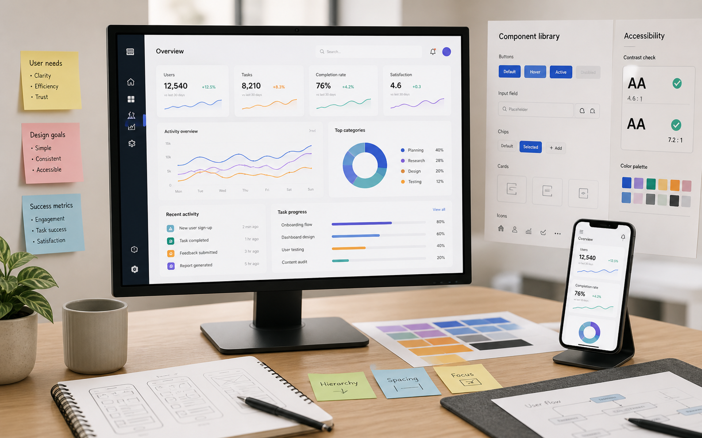

Tillbaka till design
Intervjuer + analys
Insikter för onboarding
Ett researchdrivet case där intervjuer och mönsteranalys blev designprinciper för en tryggare första upplevelse.

- Roll
- Researchplan, intervjuer, syntes och presentation av insikter.
- Metoder
- Semistrukturerade intervjuer, affinity mapping, personas och prioritering.
- Resultat
- Tre centrala behov, en ny onboardingstruktur och tydligare innehållsprioritet.
Utmaning
Nya användare förstod inte alltid vad de skulle göra först eller varför produkten var relevant för deras situation.
Researchen behövde skilja mellan vad användare sa att de ville ha och vad de faktiskt behövde i första steget.
Process
Jag planerade intervjuer, samlade in kvalitativa insikter och grupperade återkommande mönster till tydliga behov.
- Formulerade intervjuguide utifrån hypoteser.
- Byggde kluster av beteenden, frågor och hinder.
- Översatte insikterna till designprinciper.
Lösning
Onboardingen strukturerades om runt de viktigaste användarbehoven: orientering, trygghet och snabb första framgång.
Här kan du lägga till citat från intervjuer, insiktskort och hur researchen påverkade slutdesignen.
Nästa projekt
Dashboard för bättre beslut